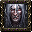
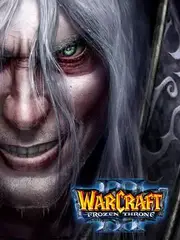

Warcraft III: The Frozen Throne |
|
| Tiempo de juego | 24s |
| Última actividad | 30/12/2025 21:12:27 |
| Añadido | 26/4/2025 1:40:24 |
| Modificado | 10/12/2025 13:55:40 |
| Estado de finalización | Jugado |
| Librería | Playnite |
| Fuente | |
| Plataforma | PC (Windows) |
| Fecha de lanzamiento | 1/7/2003 |
| Puntuación de la Comunidad | 88 |
| Puntuación de la Crítica | |
| Puntuación de usuario | |
| Género | Real Time Strategy (RTS) Strategy |
| Desarrollador | Blizzard Entertainment |
| Editor | Blizzard Entertainment Capcom Sierra Entertainment |
| Característica | Multiplayer Single Player |
| Enlaces | Wikipedia Wikia + Epic War + WC3 Maps + Hive Workshop |
| Tag | |
Esta es la expansión fundamental que continuó la historia justo donde terminó la campaña épica anterior y, para muchos, la que definió la experiencia de este RTS con elementos de RPG. Te sumerge de nuevo en el mundo de Azeroth, explorando las consecuencias de la guerra y el destino de los héroes y las razas en nuevas y desafiantes regiones.
No solo trae consigo una nueva campaña épica que cierra arcos argumentales (de hecho, varias historias entrelazadas), sino que expande brutalmente las opciones para cada raza. Se añaden nuevos héroes con habilidades únicas (dos para cada una de las cuatro razas originales, más héroes neutrales contratables), nuevas unidades con distintas capacidades y nuevos edificios. También hay más criaturas y elementos neutrales en los mapas que agregan capas estratégicas.
Todo este contenido refina y enriquece la jugabilidad que ya conocías. Hay más estrategias para descubrir, más combinaciones de ejército y héroe para perfeccionar, y el balance competitivo evoluciona significativamente. Y algo clave: gracias a sus mejoras y a un editor de mapas perfeccionado, esta fue la plataforma definitiva donde la comunidad desató todo su potencial, creando esos mapas custom y mods que dieron origen a géneros revolucionarios que hoy dominan el multijugador.
La edición completa que perfeccionó la fórmula y se convirtió en la base de un legado inmenso.